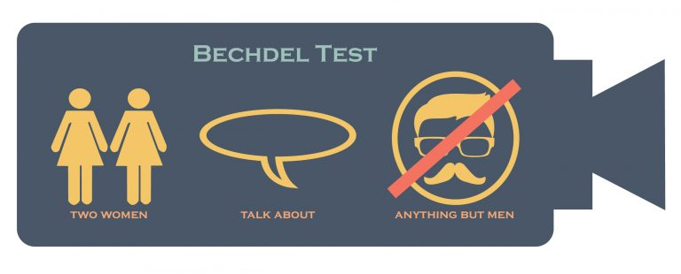
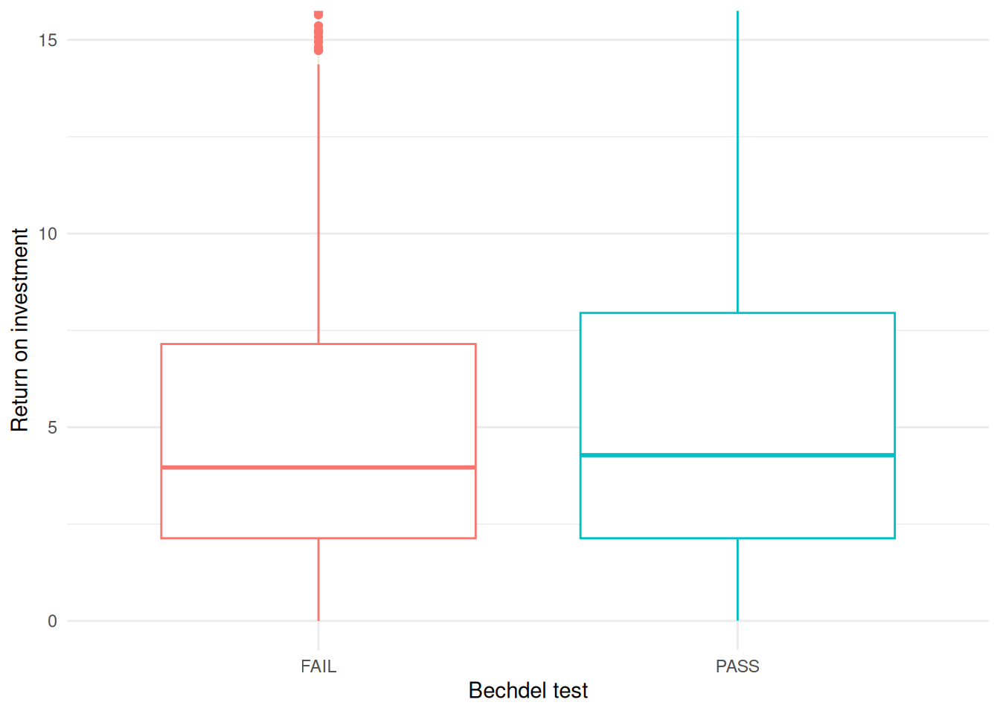

# install.packages("skimr")
# install.packages("fivethirtyeight")
library(skimr)
library(fivethirtyeight)
library(tidyverse)Unit 3 - {dplyr} - Bechdel Test
Tastaturkürzel
| Einen neuen Code-chunk hinzufügen | Ctrl + Alt + I |
| Code “Zeile für Zeile” innerhalb eines Code-chunks ausführen | Ctrl + Enter |
| Den gesamten Code-chunk ausführen | Ctrl + Shift + Enter |
| (Aus-)kommentieren | Ctrl + Shift + C |
Das Pipe |> |
Ctrl + Shift + M |
Der Zuweisungs-Operator <- |
Alt + - |
Der Bechdel-Test fragt, ob in einem Film mindestens zwei Frauen zu sehen sind, die über alles andere als einen Mann miteinander reden. Um den Test zu bestehen, muss ein Film drei Grundvoraussetzungen erfüllen:
- Es gibt mindestens zwei Frauenrollen
- Sie sprechen miteinander
- Sie unterhalten sich über etwas anderes als einen Mann.

In dieser Minianalyse arbeiten wir mit den Daten, die in der FiveThirtyEight-Geschichte mit dem Titel “The Dollar-And-Cents Case Against Hollywood’s Exclusion of Women” benutzt wurden.
- Lade packages
tidyverse,fivethirtyeightundskimr
- Erkunde die
bechdel-Daten:glimpse(),skim()
glimpse(bechdel)Rows: 1,794
Columns: 15
$ year <int> 2013, 2012, 2013, 2013, 2013, 2013, 2013, 2013, 2013, 20…
$ imdb <chr> "tt1711425", "tt1343727", "tt2024544", "tt1272878", "tt0…
$ title <chr> "21 & Over", "Dredd 3D", "12 Years a Slave", "2 Guns", "…
$ test <chr> "notalk", "ok-disagree", "notalk-disagree", "notalk", "m…
$ clean_test <ord> notalk, ok, notalk, notalk, men, men, notalk, ok, ok, no…
$ binary <chr> "FAIL", "PASS", "FAIL", "FAIL", "FAIL", "FAIL", "FAIL", …
$ budget <int> 13000000, 45000000, 20000000, 61000000, 40000000, 225000…
$ domgross <dbl> 25682380, 13414714, 53107035, 75612460, 95020213, 383624…
$ intgross <dbl> 42195766, 40868994, 158607035, 132493015, 95020213, 1458…
$ code <chr> "2013FAIL", "2012PASS", "2013FAIL", "2013FAIL", "2013FAI…
$ budget_2013 <int> 13000000, 45658735, 20000000, 61000000, 40000000, 225000…
$ domgross_2013 <dbl> 25682380, 13611086, 53107035, 75612460, 95020213, 383624…
$ intgross_2013 <dbl> 42195766, 41467257, 158607035, 132493015, 95020213, 1458…
$ period_code <int> 1, 1, 1, 1, 1, 1, 1, 1, 1, 1, 1, 1, 1, 1, 1, 1, 1, 1, 1,…
$ decade_code <int> 1, 1, 1, 1, 1, 1, 1, 1, 1, 1, 1, 1, 1, 1, 1, 1, 1, 1, 1,…relocate()
binaryvortestschieben.
bechdel |>
relocate(binary, .before = test)# A tibble: 1,794 × 15
year imdb title binary test clean_test budget domgross intgross code
<int> <chr> <chr> <chr> <chr> <ord> <int> <dbl> <dbl> <chr>
1 2013 tt1711425 21 & … FAIL nota… notalk 1.3 e7 25682380 4.22e7 2013…
2 2012 tt1343727 Dredd… PASS ok-d… ok 4.50e7 13414714 4.09e7 2012…
3 2013 tt2024544 12 Ye… FAIL nota… notalk 2 e7 53107035 1.59e8 2013…
4 2013 tt1272878 2 Guns FAIL nota… notalk 6.1 e7 75612460 1.32e8 2013…
5 2013 tt0453562 42 FAIL men men 4 e7 95020213 9.50e7 2013…
6 2013 tt1335975 47 Ro… FAIL men men 2.25e8 38362475 1.46e8 2013…
7 2013 tt1606378 A Goo… FAIL nota… notalk 9.2 e7 67349198 3.04e8 2013…
8 2013 tt2194499 About… PASS ok-d… ok 1.20e7 15323921 8.73e7 2013…
9 2013 tt1814621 Admis… PASS ok ok 1.3 e7 18007317 1.80e7 2013…
10 2013 tt1815862 After… FAIL nota… notalk 1.3 e8 60522097 2.44e8 2013…
# ℹ 1,784 more rows
# ℹ 5 more variables: budget_2013 <int>, domgross_2013 <dbl>,
# intgross_2013 <dbl>, period_code <int>, decade_code <int>codean das Ende schieben. Hint:?dplyr_tidy_select
bechdel |>
relocate(code, .after = last_col())# A tibble: 1,794 × 15
year imdb title test clean_test binary budget domgross intgross
<int> <chr> <chr> <chr> <ord> <chr> <int> <dbl> <dbl>
1 2013 tt1711425 21 & Over nota… notalk FAIL 1.3 e7 25682380 4.22e7
2 2012 tt1343727 Dredd 3D ok-d… ok PASS 4.50e7 13414714 4.09e7
3 2013 tt2024544 12 Years a … nota… notalk FAIL 2 e7 53107035 1.59e8
4 2013 tt1272878 2 Guns nota… notalk FAIL 6.1 e7 75612460 1.32e8
5 2013 tt0453562 42 men men FAIL 4 e7 95020213 9.50e7
6 2013 tt1335975 47 Ronin men men FAIL 2.25e8 38362475 1.46e8
7 2013 tt1606378 A Good Day … nota… notalk FAIL 9.2 e7 67349198 3.04e8
8 2013 tt2194499 About Time ok-d… ok PASS 1.20e7 15323921 8.73e7
9 2013 tt1814621 Admission ok ok PASS 1.3 e7 18007317 1.80e7
10 2013 tt1815862 After Earth nota… notalk FAIL 1.3 e8 60522097 2.44e8
# ℹ 1,784 more rows
# ℹ 6 more variables: budget_2013 <int>, domgross_2013 <dbl>,
# intgross_2013 <dbl>, period_code <int>, decade_code <int>, code <chr>select()
- Überlegt euch so viele Möglichkeiten wie möglich, um
budget,domgross,intgross,budget_2013,domgross_2013,intgross_2013auszuwählen. Tipp: siehe select helpers.
bechdel |>
select(budget, domgross, intgross, budget_2013, domgross_2013, intgross_2013)# A tibble: 1,794 × 6
budget domgross intgross budget_2013 domgross_2013 intgross_2013
<int> <dbl> <dbl> <int> <dbl> <dbl>
1 13000000 25682380 42195766 13000000 25682380 42195766
2 45000000 13414714 40868994 45658735 13611086 41467257
3 20000000 53107035 158607035 20000000 53107035 158607035
4 61000000 75612460 132493015 61000000 75612460 132493015
5 40000000 95020213 95020213 40000000 95020213 95020213
6 225000000 38362475 145803842 225000000 38362475 145803842
7 92000000 67349198 304249198 92000000 67349198 304249198
8 12000000 15323921 87324746 12000000 15323921 87324746
9 13000000 18007317 18007317 13000000 18007317 18007317
10 130000000 60522097 244373198 130000000 60522097 244373198
# ℹ 1,784 more rowsbechdel |>
select(budget:intgross, budget_2013:intgross_2013)# A tibble: 1,794 × 6
budget domgross intgross budget_2013 domgross_2013 intgross_2013
<int> <dbl> <dbl> <int> <dbl> <dbl>
1 13000000 25682380 42195766 13000000 25682380 42195766
2 45000000 13414714 40868994 45658735 13611086 41467257
3 20000000 53107035 158607035 20000000 53107035 158607035
4 61000000 75612460 132493015 61000000 75612460 132493015
5 40000000 95020213 95020213 40000000 95020213 95020213
6 225000000 38362475 145803842 225000000 38362475 145803842
7 92000000 67349198 304249198 92000000 67349198 304249198
8 12000000 15323921 87324746 12000000 15323921 87324746
9 13000000 18007317 18007317 13000000 18007317 18007317
10 130000000 60522097 244373198 130000000 60522097 244373198
# ℹ 1,784 more rowsbechdel |>
select(where(is.numeric), -c(year, ends_with("_code")))# A tibble: 1,794 × 6
budget domgross intgross budget_2013 domgross_2013 intgross_2013
<int> <dbl> <dbl> <int> <dbl> <dbl>
1 13000000 25682380 42195766 13000000 25682380 42195766
2 45000000 13414714 40868994 45658735 13611086 41467257
3 20000000 53107035 158607035 20000000 53107035 158607035
4 61000000 75612460 132493015 61000000 75612460 132493015
5 40000000 95020213 95020213 40000000 95020213 95020213
6 225000000 38362475 145803842 225000000 38362475 145803842
7 92000000 67349198 304249198 92000000 67349198 304249198
8 12000000 15323921 87324746 12000000 15323921 87324746
9 13000000 18007317 18007317 13000000 18007317 18007317
10 130000000 60522097 244373198 130000000 60522097 244373198
# ℹ 1,784 more rowsbechdel |>
select(starts_with("budget"), contains("gross"))# A tibble: 1,794 × 6
budget budget_2013 domgross intgross domgross_2013 intgross_2013
<int> <int> <dbl> <dbl> <dbl> <dbl>
1 13000000 13000000 25682380 42195766 25682380 42195766
2 45000000 45658735 13414714 40868994 13611086 41467257
3 20000000 20000000 53107035 158607035 53107035 158607035
4 61000000 61000000 75612460 132493015 75612460 132493015
5 40000000 40000000 95020213 95020213 95020213 95020213
6 225000000 225000000 38362475 145803842 38362475 145803842
7 92000000 92000000 67349198 304249198 67349198 304249198
8 12000000 12000000 15323921 87324746 15323921 87324746
9 13000000 13000000 18007317 18007317 18007317 18007317
10 130000000 130000000 60522097 244373198 60522097 244373198
# ℹ 1,784 more rowsrename()
codemitbechdel_codeumbenennen.
bechdel |>
rename(bechdel_code = code)# A tibble: 1,794 × 15
year imdb title test clean_test binary budget domgross intgross
<int> <chr> <chr> <chr> <ord> <chr> <int> <dbl> <dbl>
1 2013 tt1711425 21 & Over nota… notalk FAIL 1.3 e7 25682380 4.22e7
2 2012 tt1343727 Dredd 3D ok-d… ok PASS 4.50e7 13414714 4.09e7
3 2013 tt2024544 12 Years a … nota… notalk FAIL 2 e7 53107035 1.59e8
4 2013 tt1272878 2 Guns nota… notalk FAIL 6.1 e7 75612460 1.32e8
5 2013 tt0453562 42 men men FAIL 4 e7 95020213 9.50e7
6 2013 tt1335975 47 Ronin men men FAIL 2.25e8 38362475 1.46e8
7 2013 tt1606378 A Good Day … nota… notalk FAIL 9.2 e7 67349198 3.04e8
8 2013 tt2194499 About Time ok-d… ok PASS 1.20e7 15323921 8.73e7
9 2013 tt1814621 Admission ok ok PASS 1.3 e7 18007317 1.80e7
10 2013 tt1815862 After Earth nota… notalk FAIL 1.3 e8 60522097 2.44e8
# ℹ 1,784 more rows
# ℹ 6 more variables: bechdel_code <chr>, budget_2013 <int>,
# domgross_2013 <dbl>, intgross_2013 <dbl>, period_code <int>,
# decade_code <int>mutate()
- Eine Spalte
roi(return on investment = Kapitalrendite): und ein neues Objektbechdel_roierstellen.
bechdel_roi <- bechdel |>
mutate(roi = (domgross_2013 + intgross_2013) / budget_2013)summarise()
- Berechnet den Mittelwert (
mean()) und den Median (median()) der Kapitalrendite (roi) pro Testergebnis (binary)
bechdel_roi |>
group_by(binary) |>
summarise(
n = n(),
mean_roi = mean(roi, na.rm = TRUE),
median_roi = median(roi, na.rm = TRUE)
)# A tibble: 2 × 4
binary n mean_roi median_roi
<chr> <int> <dbl> <dbl>
1 FAIL 991 11.4 3.96
2 PASS 803 8.28 4.28- Erstellt ein Boxplot der
roigegenbinary.
ggplot(bechdel_roi, aes(x = binary, y = roi, colour = binary)) +
geom_boxplot() +
coord_cartesian(ylim = c(0, 15)) + # Zoom in on films with reasonable ROI
labs(
x = "Bechdel test",
y = "Return on investment"
) +
theme_minimal() +
theme(legend.position = "none")